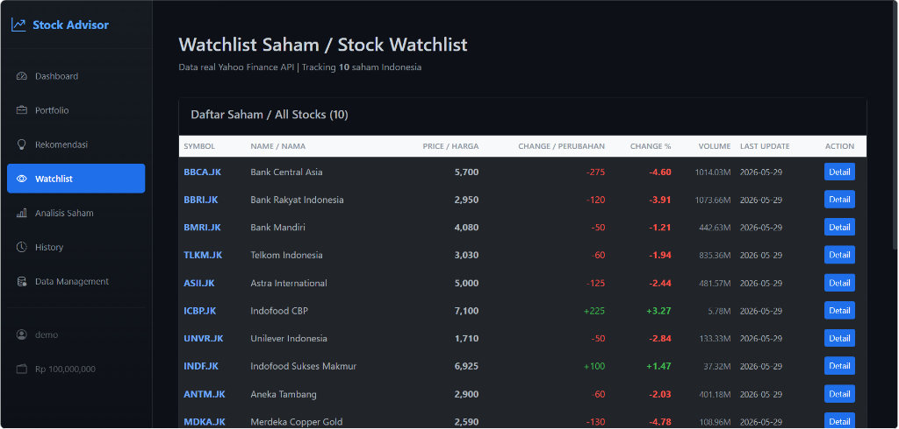

AI Developer • Data Analyst • 2026
Stock Market Analytics
Stock Market Analytics & Investment Insight Platform

Deskripsi Proyek
Stock Market Analytics & Investment Insight Platform merupakan aplikasi berbasis web yang dirancang untuk membantu investor menganalisis performa saham melalui visualisasi data, pemantauan tren pasar, dan penyajian insight investasi yang mudah dipahami. Sistem mengintegrasikan data pasar saham ke dalam dashboard interaktif sehingga pengguna dapat memantau pergerakan harga, volume transaksi, dan indikator performa saham secara lebih efisien.
Platform ini bertujuan membantu proses pengambilan keputusan investasi dengan menyajikan data historis, tren pergerakan pasar, dan analisis yang dapat digunakan sebagai bahan pertimbangan sebelum melakukan transaksi investasi.
Fitur Utama
- Stock Market Dashboard: Antarmuka interaktif yang menampilkan rangkuman kondisi pasar saham secara komprehensif.
- Historical Stock Performance Analysis: Analisis mendalam kinerja historis harga saham untuk jangka pendek dan jangka panjang.
- Interactive Data Visualization: Grafik interaktif untuk mempermudah pembacaan tren harga dan perbandingan instrumen investasi.
- Market Trend Monitoring: Pemantauan arah tren pasar keuangan secara dinamis berdasarkan data pasar real-time.
- Investment Insight Generation: Penyajian insight investasi terautomasi untuk membantu menyaring peluang transaksi potensial.
- Stock Performance Comparison: Fitur pembanding kinerja antar emiten saham secara langsung pada satu grafik.
- Financial Data Analytics: Analisis metrik keuangan dan performa fundamental perusahaan publik secara terperinci.
- Real-Time Market Monitoring: Sinkronisasi pergerakan harga saham secara real-time menggunakan integrasi API eksternal.
- Portfolio Performance Tracking: Pelacakan dan simulasi performa alokasi portofolio investasi pengguna dari waktu ke waktu.
- Automated Reporting: Pembuatan laporan ringkasan analisis performa saham bulanan secara otomatis.
Dampak Proyek
- Visualisasi Intuitif: Membantu investor memahami tren dan performa saham secara lebih cepat melalui grafik interaktif yang mudah dibaca.
- Analisis Efisien: Mempermudah pengolahan data pasar saham yang kompleks tanpa perlu melakukan perhitungan manual secara terpisah.
- Keputusan Berbasis Data: Mendukung investor dalam menentukan keputusan transaksi berbasis data historis serta indikator teknis yang terstruktur.
Detail Informasi
| Peran | AI Developer & Data Analyst |
| Kategori | Financial Technology / Stock Analytics |
| Tahun | 2026 |
| Tech Stack |
Python
Data Analytics
Financial Analytics
SQL Database
REST API
JavaScript
HTML5 / CSS3
Data Visualization
|
Keahlian Kunci
Data Analytics
Financial Data Analysis
Business Intelligence
Dashboard Development
Data Visualization
API Integration
Full-Stack Development
Problem Solving
Scan Project